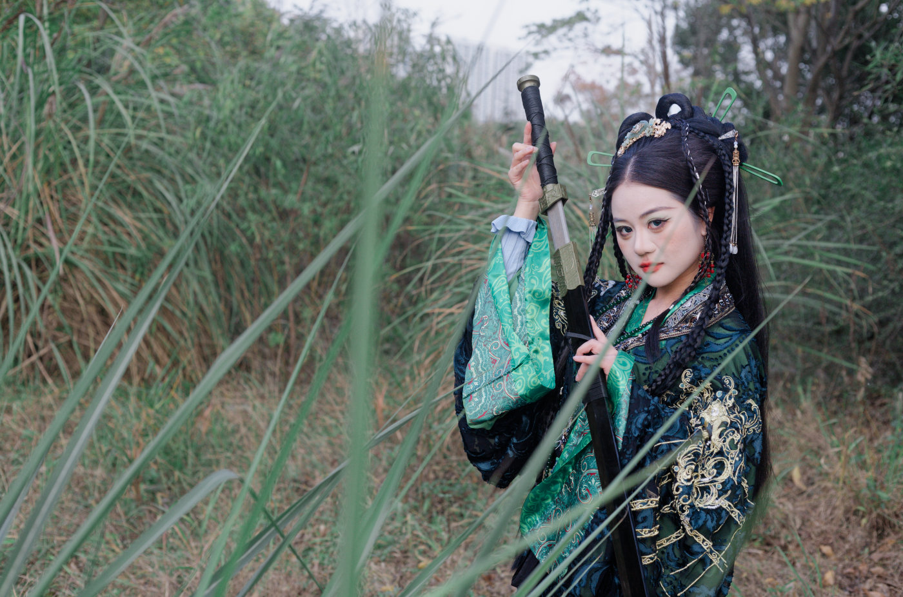
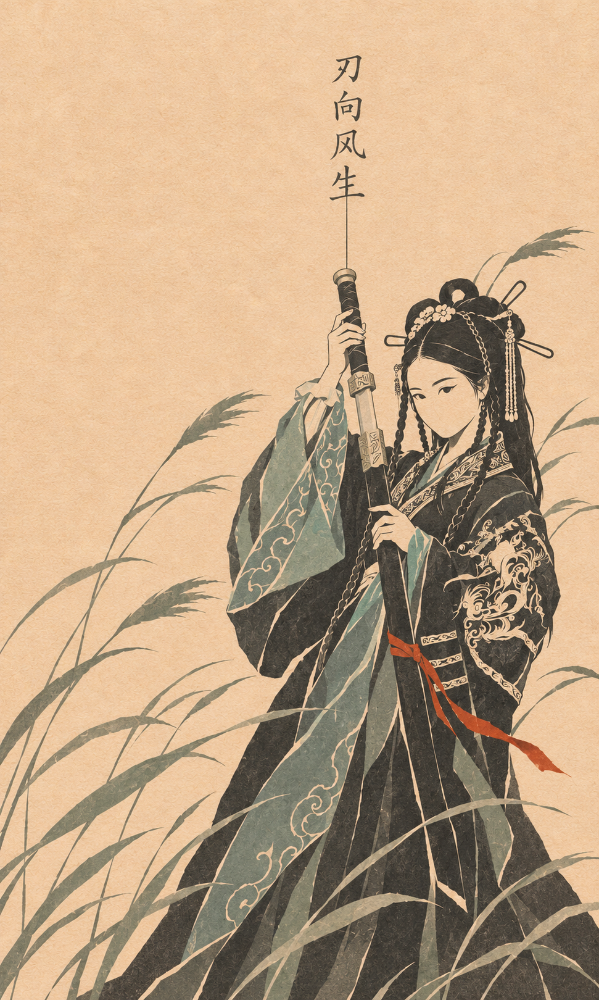
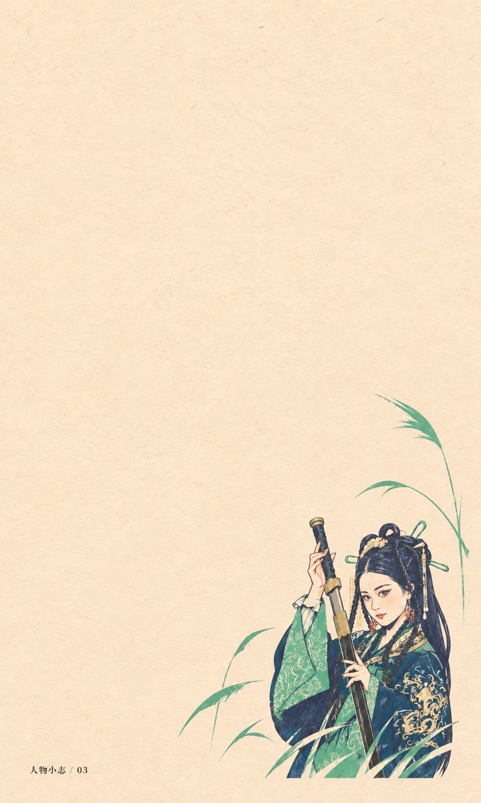
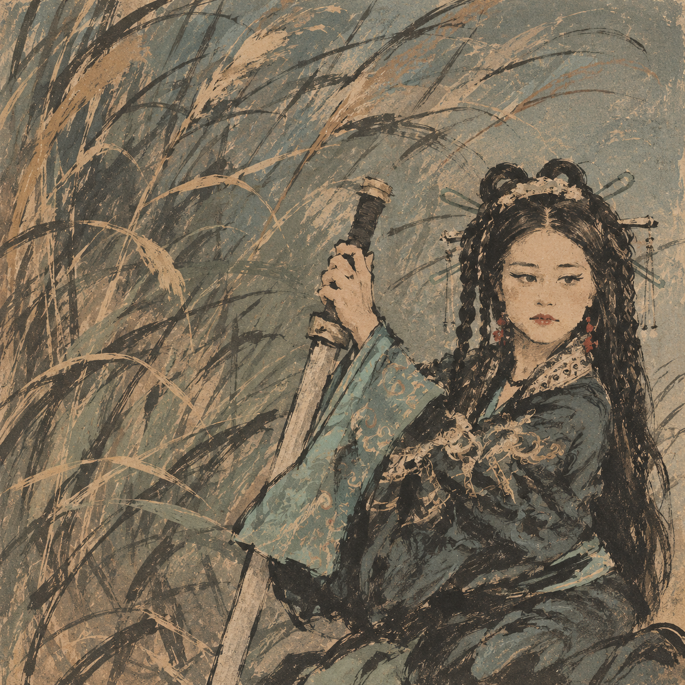

今天无意中尝试了两个 AI 图片创作 Skill。它们都可以将照片转化为具有纸张质感和编辑设计气息的视觉作品，不过思路并不完全相同。以下是简单的尝试记录。
ENGLISH
A photograph can be more than a finished image—it can also be the starting point for another visual expression. I tried two Codex skills that reinterpret a portrait as a zine illustration or minimalist editorial poster. Here are some notes from the experiment.
原照片：

1. scene-distillation-zine-v1-3 (GitHub)
这是一个将用户照片转化为原创纸刊风插画海报的 Codex Skill。它会提取照片中的情绪、关系和视觉线索，再进行重新创作。生成结果并不保留原照片像素，也不是描摹、拼贴或写实复制，而是对原有视觉信息进行重新表达。
使用方法：
上传照片后，使用斜杠选择技能，然后输入：
把这张图片变成一张具有艺术表达的纸刊插画海报
如需尝试更严格的单色块风格，使用准确触发词：
用单色块模式处理这张图片
ENGLISH
scene-distillation-zine-v1-3 transforms a photograph into an original zine-style illustrated poster. Rather than tracing, collaging, or reproducing the source image realistically, it reinterprets visual cues such as mood, relationships, and scene elements.
To try it, upload a photograph, select the skill using the slash command, and prompt it to turn the image into an expressive zine illustration poster. For a stricter flat-color approach, use the specific phrase: “用单色块模式处理这张图片”.

这张输出保留了人物、服饰、武器以及芦苇等主要视觉元素，但重新组织了构图和色彩。纸张纹理、平面化的色块和类似传统绘画的线条，使它更像一张独立创作的插画海报，而不是照片套用滤镜后的效果。
2. gc-minimal-zine-poster (GitHub)
Minimal Zine Poster 是另一个 Codex Skill。它可以将主题、句子、文章构想、物件、情绪、照片或参考图集，转化为一张具有纸张质感的极简编辑海报、一条可直接使用的生图 Prompt，或一套可复用的视觉系统。
与前一个 Skill 相比，它更强调海报的设计语言，例如留白、布局、纸张质感和整体视觉系统，也提供了分析参考图集、整理可复用规则等使用方式。
使用方法：
生成海报：
`用 $gc-minimal-zine-poster-v0-3 做一张关于雨天旧书店的海报。`
只分析参考图，不生成图片：
`用 $gc-minimal-zine-poster-v0-3 分析这个图片文件夹，区分固定规则和可变规则，不要复制原图文字，并给我一条可复用 Prompt。`
把用户照片作为编辑目标：
`用 $gc-minimal-zine-poster-v0-3 把这张人物照片做成海报，保留人物身份和服装，只改变排版与纸张质感。`
只要最终 Prompt：
`用 $gc-minimal-zine-poster-v0-3 写一条关于旧书店夜晚关门的最终生图 Prompt，不要出图。`
ENGLISH
gc-minimal-zine-poster works with subjects ranging from ideas and text to photographs and reference collections. It can produce a minimalist editorial poster, a ready-to-use image-generation prompt, or a reusable visual system.
Its emphasis is more design-oriented: composition, negative space, paper texture, and visual consistency. It can also be used to analyze a collection of references and distinguish reusable design rules from elements specific to individual images.

这张输出采用了明显的留白和更小的人物比例。人物被放置在画面下方，芦苇成为辅助视觉元素，整体更接近一张具有编辑设计属性的海报。这种方式并不只是改变画风，也重新决定了照片中的主体如何与画面空间发生关系。

另一种输出则修改为浮世绘的日式古风，叠加美式涂鸦与手绘速写感混搭。与留白版本相比，它更强调氛围与绘画表现，整体视觉相对粗粝，画面信息也更加密集。
ENGLISH
These two variations take quite different visual directions. The first uses generous negative space and places the figure near the bottom of the composition, with the reeds serving as a subtle supporting element. It feels more like a minimalist editorial poster than a conventional portrait.
The second combines a Japanese ukiyo-e-inspired aesthetic with American graffiti elements and a loose, sketch-like treatment. Its rougher textures and denser visual details create a more expressive, painterly atmosphere.
一点观察
这次尝试比较有意思的地方，并不是某一种画风有多好，而是同一张照片可以成为不同视觉表达的素材。一个方向侧重从照片中提取元素并重新创作；另一个方向则更容易把照片放进一套海报设计语言中。
它们并不能替代摄影，也不必被看作照片后期的一部分。对我而言，更像是摄影作品完成之后的一种延伸：当照片中的人物、场景和情绪已经确定，仍然可以尝试用不同的视觉语言重新讲述它。
ENGLISH
What I found interesting in this experiment was not that one style was necessarily better than the other, but that the same photograph could serve as the starting point for quite different forms of visual expression. One approach extracts elements from the image and reimagines them; the other places the photograph within a more deliberate poster-design language.
Neither is a replacement for photography, nor do I see them simply as another stage of photo editing. To me, they are ways of extending a photographic project after the image itself is finished—retelling its subject, setting, and mood through a different visual language.